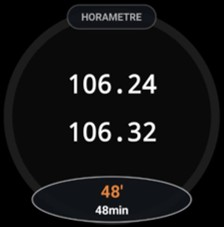
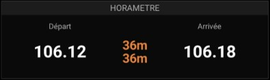

Possibilités
- Deux relevés (Départ / Arrivée, format NNN.NN).
- La durée de vol calculée s'affiche (différence × 6 min → minutes et h:mm).
- Les relevés sont également alimentés automatiquement par les flux ACTION moteur (ANLACT) : le dialogue Horamètre départ s'ouvre lors du démarrage moteur (ENGINE_START, 3e étape) et le dialogue Horamètre arrivée lors de l'arrêt moteur (ENGINE_STOP, 1re étape).
- Les valeurs renseignées apparaissent dans le Dossier de vol affiché à l'arrêt moteur (et dans le fichier
resume.jpgdu ZIP exporté par ANLFDR).
Gestes supportés
Appui long sur une cellule : saisir le relevé
Double-tap : —
ANLHRM

NUMHRM
